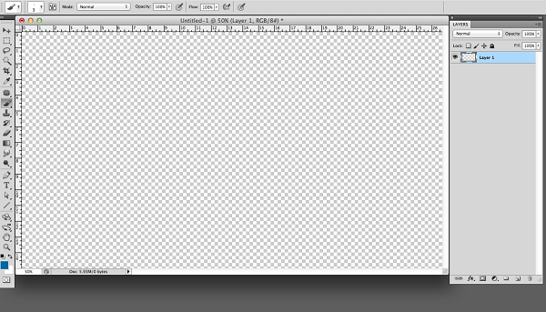
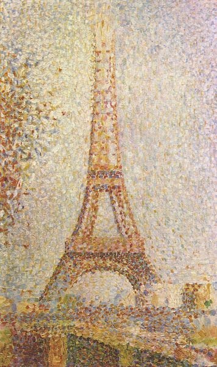

As computer generated graphics advance, the 2D world of pixels would presumably be left in the past. In the modern world, individual pixels are only for the eyes of the designer who is permitted to see the design close up, rather than the audience who see the complete and smooth rendering of the image. However, recently there has been a trend towards pixel art that is doing just the opposite of this and proudly showing the pixels on display, warts and all. Is this new trend of pixel art just nostalgia for a bygone era or could we soon be seeing more pixels finding their way into graphic design and art work?
What is pixel art?
Pixel art has its origins in early drawing and painting software and was popularised by computer game design through the ’80s and ’90s. It is created on graphics software that allows images to be edited at the individual pixel level. The images that are constructed are reminiscent of early computer games or amateur-made mobile phone video games, both of which would have been created by a pixel artist.
While a greater number of pixels involved in the design results in a cleaner, smoother image, in most of today’s programs you cannot see the individual pixels. However, early computer programs and devices did not have the capability to display the number of pixels required to create such an image. It was up to the pixel artist to find a way round these limitations by constructing a believable image from a limited number of pixels. Today, with a few exceptions, the technology largely does exist; however, many artists are continuing to choose a limited number of pixels to emphasise the individual squares, giving a retro quality to their art.
The origins of pixel art
The term ‘pixel art’ dates back to 1982, and to the Xerox Palo Alto Research Centre where it was first published and popularised by Adele Goldberg and Robert Flegal. Goldberg and Flegal may well have coined the term but pixel art as a concept originates 10 years prior to this with Richard Shoups 1972 SuperPaint system. The 1970s may well have been the advent of computer generated pixel art, but some rightly claim that it is merely an imitation of ancient art forms, such as mosaic, bead-work and embroidery. If you take a look at the pointillist technique, developed by Georges Seurat and Paul Signac in the 1880s, the similarity with pixel art is apparent. In pointillism, the painter uses small dots of colour to make up an image. With pixel art the painted dots of colour are simply replaced by squares on a computer screen.
All prior art forms that use small coloured units to construct larger pictures have undoubtedly had some influence on the continuation of the use of pixels and the popular appeal of modern day pixel art.
The rise and fall of pixel art in the video games industry
In the early days of computer and console video games, pixel art was the main way of constructing the images on screen. The results were endearing; who can forget the pixelated worlds of Super Mario, Pokemon or Zelda? All these titles may well have had fantastic game play, but it is the pixelated images that remain as symbols of video game culture. The rise of 3D graphics, and their ability to more closely mimic reality on powerful games consoles, has seen pixel art become outdated in the professional video games industry.
Despite this downward trend, pixel art continues to remain very popular among amateur games design enthusiasts, especially since the mobile gaming industry took off. Compared to computers and video game consoles, mobile phones still generally have a low resolution and memory, and any games crafted for these devices require skillful use of memory and space by the designer. Amateur pixel art enthusiasts have found this to be a great arena to show off their skills in design.
A new design trend
It’s not just in the games industry that pixel art is experiencing a resurgence, and many artists and design agencies are now employing the art form in their own stand-alone designs. EBoy are a pioneering graphic design group that specialise in pixel art for advertising and have been doing so since 1998. Their huge list of top name clients, including Nike, Paul Smith, Playstation, Kidrobot and many more, prove pixel art’s popularity and appeal as well as the power an image created with pixels can have on an audience. Kai Verschamer of eBoy explained to us that pixel art can never become outdated due to the fact it is so basic and so enjoyable to work with:
“We chose to work with the pixel because we wanted to be able to control the smallest part of the screen. It turned out that the limitations and the modular nature of pixels were big fun to make things with.”